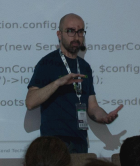

Build middleware applications with Zend Framework 3
by Enrico Zimuel / @ezimuel
Senior Software Engineer
Zend Technologies, a Rogue Wave Company
About me
|  |
|
Zend Framework 3
ZF3 roadmap
We almost done, working on docs and the new web site.
The plan is to release the full ZF3 packages on June 2016.
Middleware
A function that gets a request and generates a response
function ($request, $response) {
// manipulate $request to generate a $response
return $response;
}
The Middleware onion
PSR-7
Shared HTTP Message Interfaces

HTTP Request
// $request instanceOf Psr\Http\Message\RequestInterface
$method = $request->getMethod();
$accept = $request->getHeader('Accept');
$path = $request->getUri()->getPath();
$controller = $request->getAttribute('controller');
HTTP Response
// $response instanceOf Psr\Http\Message\ResponseInterface
$response->getBody()->write('Hello world!');
$response = $response->withStatus(200, 'OK')
->withHeader('Content-Type', 'text/plain');
A PSR-7 Middleware Class
Use an additional callable during the invoke ($next)
use Psr\Http\Message\RequestInterface as Request;
use Psr\Http\Message\ResponseInterface as Response;
class Middleware
{
public function __invoke(
Request $request,
Response $response,
callable $next = null
){
// do something before
if ($next) {
$next($request, $response);
}
// do something after
}
}
Zend-expressive
- PSR-7 support (using zend-diactoros)
- Middleware using a callable ($next):
function ($request, $response, $next) - Piping workflow (using zend-stratigility)
- Features: routing, container-interop, templating, error handling
- Stable version 1.0 (28 Jan 2016)
Components layer

Flow overview
Basic example
use Zend\Expressive\AppFactory;
chdir(dirname(__DIR__));
require 'vendor/autoload.php';
$app = AppFactory::create();
$app->get('/', function ($request, $response, $next) {
$response->getBody()->write('Hello, world!');
return $response;
});
$app->pipeRoutingMiddleware();
$app->pipeDispatchMiddleware();
$app->run();
Piping Middleware
// $app is an instance of Zend\Expressive\Application
// Executed in all the requests
$app->pipe($apiMiddleware);
$app->pipe('middleware service name');
// Pipe to a specific URL
$app->pipe('/api', $apiMiddleware);
$app->pipe('/api', 'middleware service name');
// Error handler
$app->pipeErrorHandler('error handler service name');
$app->pipeErrorHandler('/api', 'error handler service name');
Using a Service Container
use Zend\Expressive\AppFactory;
use Zend\ServiceManager\ServiceManager;
$container = new ServiceManager();
$container->setFactory('HelloWorld', function ($container) {
return function ($req, $res, $next) {
$res->write('Hello, world!');
return $res;
};
});
$app = AppFactory::create($container);
$app->get('/', 'HelloWorld');
We support container-interop
Routing
- zend-expressive-router component
- Dynamic routing capabilities using your favorite libraries
- Adapters: Aura.router, FastRoute, Zend-Mvc router
namespace Zend\Expressive\Router;
use Psr\Http\Message\ServerRequestInterface as Request;
interface RouterInterface
{
public function addRoute(Route $route);
public function match(Request $request);
public function generateUri($name, array $substitutions = []);
}
Templating
- While Expressive does not assume templating is being used, it provides a templating abstraction.
- Default adapters: Plates, Twig, Zend-View
namespace Zend\Expressive\Template;
interface TemplateRendererInterface
{
public function render($name, $params = []);
public function addPath($path, $namespace = null);
public function getPaths();
public function addDefaultParam($templateName, $param, $value);
}
Error Handling
- Expressive provides error handling out of the box, via zend-stratigility's FinalHandler
- The FinalHandler is executed if:
- the middleware stack is exhausted, and no middleware has returned a response
- an error has been passed via $next(), but not handled by any middleware
Templated Errors
use Zend\Expressive\Application;
use Zend\Expressive\Plates\PlatesRenderer;
use Zend\Expressive\TemplatedErrorHandler;
$plates = new PlatesRenderer();
$plates->addPath(__DIR__ . '/templates/error', 'error');
$final = new TemplatedErrorHandler($plates, 'error::404', 'error::500');
$app = new Application($router, $container, $final);
Skeleton application
- We provide a skeleton app for start with zend-expressive:
github.com/zendframework/zend-expressive-skeleton
Getting started
$ composer create-project zendframework/zend-expressive-skeleton <path>
Run the skeleton app
$ composer serve
Open your browser at http://localhost:8080
Skeleton tree
├── config │ └── autoload ├── data │ └── cache ├── public ├── src │ └── App │ └── Action ├── templates │ ├── app │ ├── error │ └── layout └── test
Config
The application configuration files, including:
- the registered services;
- the middleware pipeline;
- the routes;
- the template file paths;
- the error handler;
Example of route config
autoload/routes.global.php
return [
'dependencies' => [
'factories' => [
App\Action\FooAction::class => App\Action\FooFactory::class,
],
],
'routes' => [
[
'name' => 'home',
'path' => '/',
'middleware' => App\Action\FooAction::class,
'allowed_methods' => ['GET'],
]
],
];
Front controller
public/index.php
// Delegate static file requests back to the PHP built-in webserver
if (php_sapi_name() === 'cli-server'
&& is_file(__DIR__ . parse_url($_SERVER['REQUEST_URI'], PHP_URL_PATH))
) {
return false;
}
chdir(dirname(__DIR__));
require 'vendor/autoload.php';
/** @var \Interop\Container\ContainerInterface $container */
$container = require 'config/container.php';
/** @var \Zend\Expressive\Application $app */
$app = $container->get(\Zend\Expressive\Application::class);
$app->run();
Service container
config/container.php
use Zend\ServiceManager\Config;
use Zend\ServiceManager\ServiceManager;
// Load configuration
$config = require __DIR__ . '/config.php';
// Build container
$container = new ServiceManager();
(new Config($config['dependencies']))->configureServiceManager($container);
// Inject config
$container->setService('config', $config);
return $container;
A Middleware Action Factory
src/App/Action/FooFactory.php
namespace App\Action;
use Interop\Container\ContainerInterface;
use Zend\Expressive\Template\TemplateRendererInterface;
class FooFactory
{
public function __invoke(ContainerInterface $container)
{
$template = ($container->has(TemplateRendererInterface::class))
? $container->get(TemplateRendererInterface::class)
: null;
return new FooAction($template);
}
}
A Middleware Action
src/App/Action/FooAction.php
namespace App\Action;
use Psr\Http\Message\ResponseInterface;
use Psr\Http\Message\ServerRequestInterface;
use Zend\Diactoros\Response\HtmlResponse;
use Zend\Expressive\Template\TemplateRendererInterface;
class FooAction
{
protected $template;
public function __construct(TemplateRendererInterface $template = null)
{
$this->template = $template;
}
public function __invoke(
ServerRequestInterface $request,
ResponseInterface $response,
callable $next = null
) {
$data = [];
// get the data to print in the template
return new HtmlResponse($this->template->render('app::foo', $data));
}
}
Thanks!
Rate this talk at joind.in/talk/31a66
More info: zendframework.github.io/zend-expressive
Contact me: enrico [at] zend.com
Follow me: @ezimuel

This work is licensed under a
Creative Commons Attribution-ShareAlike 3.0 Unported License.
I used reveal.js to make this presentation.